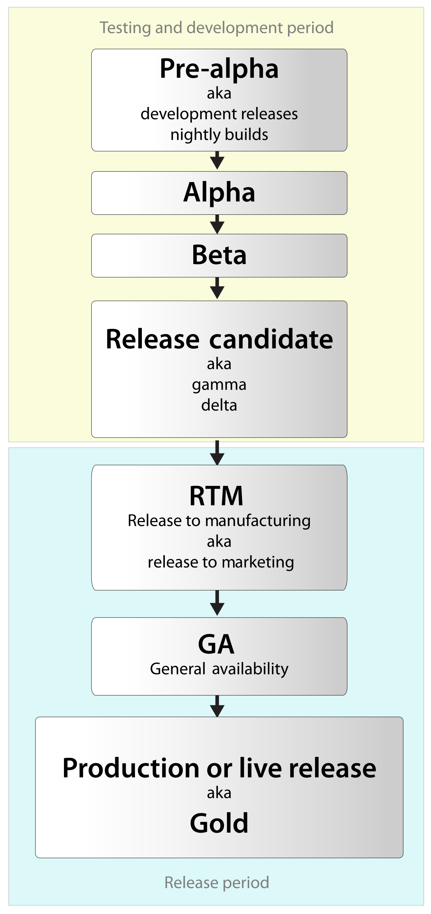

Software Development Plan(SDP)
Detailed Requirements
Typical Software Documentation

Requirements analysis and planning are the keys to the success of an implementation.
The Analysis Phase is where you break down the deliverables in the high-level Project Charter into the more detailed business requirements. The Analysis Phase is also the part of the project where you identify the overall direction that the project will take through the creation of the project strategy documents.
The Design Phase is where you look at the many potential solutions and narrow down the choices to determine the most effective and efficient way to construct the solution. The Design Phase answers the questions about "how" you will build the best solution
Defining requirements creates the foundation of a successful business intelligence (BI) solution by documenting what will be built. The categories of requirements are:
ER Diagram-ER Diagram stands for Entity Relationship Diagram, also known as ERD is a diagram that displays the relationship of entity sets stored in a database. In other words, ER diagrams help to explain the logical structure of databases.
UML diagrams-A UML diagram is a diagram based on the UML (Undefined Modeling Language) with the purpose of visually representing a system along with its main actors, roles, actions, artifacts or classes, in order to better understand, alter, maintain, or document information about the system.
CAD diagram-Computer-aided design (CAD) is the use of computers (or workstations) to aid in the creation, modification, analysis, or optimization of a design.[1] This software is used to increase the productivity of the designer, improve the quality of design, improve communications through documentation, and to create a database for manufacturing.[2] Designs made through CAD software are helpful in protecting products and inventions when used in patent applications. CAD output is often in the form of electronic files for print, machining, or other manufacturing operations. The terms computer-aided drafting (CAD) and computer aided design and drafting (CADD) is also used
Implementation/Coding starts once the developer gets the Design document. The Software design is translated into source code. All the components of the software are implemented in this phase.
Testing starts once the coding is complete and the modules are released for testing. In this phase, the developed software is tested thoroughly and any defects found are assigned to developers to get them fixed.
The deployment phase is the final phase of the software development life cycle (SDLC) and puts the product into production.
The final stage is maintenance. After the deployment of a product on the production environment, maintenance of the product i.e. if any issue comes up and needs to be fixed or any enhancement is to be done is taken care by the developers.
Beta, named after the second letter of the Greek alphabet, is the software development phase following alpha. Software in the beta stage is also known as betaware. A beta phase generally begins when the software is feature complete but likely to contain a number of known or unknown bugs.
The alpha version of a software product is a pre-release early version that is part of a dedicated testing process. Most software products move through a multi-step process before being released to the public. An alpha version is part of that system for developing efficient, accurate and bug-free software programs.
A release candidate (RC), also known as "going silver", is a beta version with potential to be a stable product, which is ready to release unless significant bugs emerge. In this stage of product stabilization, all product features have been designed, coded and tested through one or more beta cycles with no known showstopper-class bugs. A release is called code complete when the development team agrees that no entirely new source code will be added to this release.
Release to The Web.The term release to manufacturing (RTM), also known as "going gold", is a term used when a software product is ready to be delivered. This build may be digitally signed, allowing the end user to verify the integrity and authenticity of the software purchase. A copy of the RTM build known as the "gold master" or GM[11][12] is sent for mass duplication or disc replication if applicable. This terminology is taken from the audio record making industry, specifically the process of mastering. RTM precedes general availability (GA) when the product is released to the public